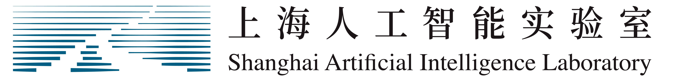

Research Partners
Collaborating with world-class institutions



🦞 Claw for
Self-Hosted AI Research Assistant
Inspired by OpenClaw
Chat with AI grounded in your documents via RAG, leverage 206 scientific skills, and orchestrate autonomous agents — all from a single self-hosted platform.
A comprehensive AI research platform combining workspace management, RAG-enhanced chat, autonomous agents, and 206 scientific skills in a single self-hosted application.
Map server-side folders as persistent workspaces. Browse, upload, edit, and preview files with tree-view navigation, Markdown rendering, and PDF support.
AI answers grounded in your workspace documents with inline source citations. Powered by vector embeddings stored in SQLite for instant retrieval.
Auto-generate summaries, FAQs, briefings, newsletters, timelines, and daily/weekly reports from your workspace content with one click.
Autonomous agents with 36 tool-calling capabilities including bash execution, file operations, kubectl commands, article search, and scientific skill invocation.
Cross-source academic search spanning arXiv, HuggingFace Daily Papers, and Semantic Scholar. AI-powered query expansion and batch summarization.
Tab-based multi-session management with independent contexts, rename support, and MAX mode for automatic context summarization to prevent overflow.
Powered by Science Context Protocol (SCP), each skill is composable into autonomous research workflows — from drug target identification to protein structure prediction.
Target identification, ADMET prediction, virtual screening, molecular docking, pharmacovigilance.
Variant pathogenicity assessment, cancer genomics, population genetics, gene-disease associations.
ESMFold/AlphaFold structure prediction, binding site analysis, protein-drug interaction profiling.
Structure analysis, molecular fingerprints, structure-activity relationships, SMILES processing.
Circuit analysis, thermodynamics, optics, electromagnetic field analysis, signal processing.
Protocol generation, PubMed literature search, experimental data processing.
Atmospheric science calculations, oceanographic properties, seismic waveform processing.
Scientific literature mining, biomedical web search, meta-analysis execution.
SCP provides a standardized skill format for autonomous scientific research. Each skill includes overview, capabilities, usage examples, and API endpoint connections via the Intern-Discovery Platform.
206 SKILLS ACROSS 8 DOMAINS
Each workflow chains multiple skills and tools into end-to-end research automation.
Clone the repo, install dependencies, configure your API keys, and start the development server. InnoClaw runs on any machine with Node.js 20+.
WebSocket real-time messaging with interactive card messages. Agent tool-calling directly from Feishu conversations.
Submit GPU computing jobs via Volcano scheduler. Manage cluster resources directly from the Agent panel.
Clone and pull repositories with private repo support via personal access tokens. Integrated Git operations.
Browse and download datasets directly. Access Daily Papers for latest AI research. Integrated model discovery.
Collaborating with world-class institutions
